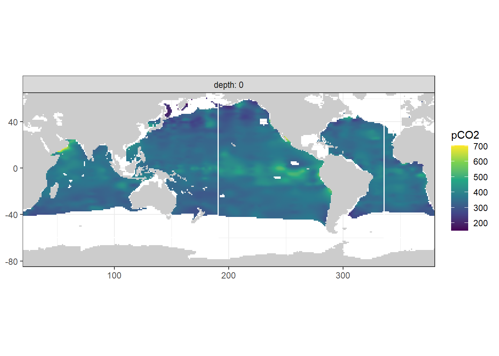
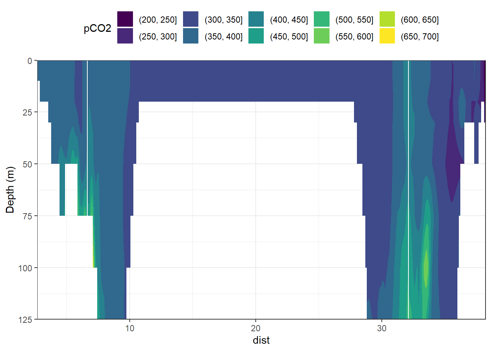
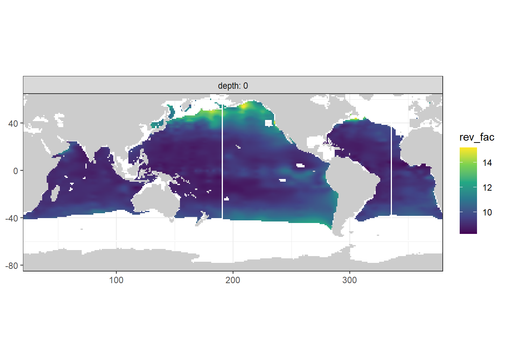

Mapping cant
Jens Daniel Müller
20 November, 2020
Last updated: 2020-11-20
Checks: 7 0
Knit directory: Cant_eMLR/
This reproducible R Markdown analysis was created with workflowr (version 1.6.2). The Checks tab describes the reproducibility checks that were applied when the results were created. The Past versions tab lists the development history.
Great! Since the R Markdown file has been committed to the Git repository, you know the exact version of the code that produced these results.
Great job! The global environment was empty. Objects defined in the global environment can affect the analysis in your R Markdown file in unknown ways. For reproduciblity it’s best to always run the code in an empty environment.
The command set.seed(20200707) was run prior to running the code in the R Markdown file. Setting a seed ensures that any results that rely on randomness, e.g. subsampling or permutations, are reproducible.
Great job! Recording the operating system, R version, and package versions is critical for reproducibility.
Nice! There were no cached chunks for this analysis, so you can be confident that you successfully produced the results during this run.
Great job! Using relative paths to the files within your workflowr project makes it easier to run your code on other machines.
Great! You are using Git for version control. Tracking code development and connecting the code version to the results is critical for reproducibility.
The results in this page were generated with repository version 21f6e29. See the Past versions tab to see a history of the changes made to the R Markdown and HTML files.
Note that you need to be careful to ensure that all relevant files for the analysis have been committed to Git prior to generating the results (you can use wflow_publish or wflow_git_commit). workflowr only checks the R Markdown file, but you know if there are other scripts or data files that it depends on. Below is the status of the Git repository when the results were generated:
Ignored files:
Ignored: .Rproj.user/
Ignored: data/
Ignored: dump/
Note that any generated files, e.g. HTML, png, CSS, etc., are not included in this status report because it is ok for generated content to have uncommitted changes.
These are the previous versions of the repository in which changes were made to the R Markdown (analysis/mapping_cant_calculation.Rmd) and HTML (docs/mapping_cant_calculation.html) files. If you’ve configured a remote Git repository (see ?wflow_git_remote), click on the hyperlinks in the table below to view the files as they were in that past version.
| File | Version | Author | Date | Message |
|---|---|---|---|---|
| html | e563eef | jens-daniel-mueller | 2020-11-20 | Build site. |
| Rmd | 6b50088 | jens-daniel-mueller | 2020-11-20 | rebuild all with seperate set-up and harmonized variable names |
| html | 064d52f | jens-daniel-mueller | 2020-11-20 | Build site. |
| Rmd | 7ffabe6 | jens-daniel-mueller | 2020-11-20 | use setup child Rmd file |
| html | fc70a34 | jens-daniel-mueller | 2020-11-10 | Build site. |
| html | 280c425 | jens-daniel-mueller | 2020-11-09 | Build site. |
| Rmd | 7786901 | jens-daniel-mueller | 2020-11-09 | created comparison plots |
| html | b170b79 | jens-daniel-mueller | 2020-11-03 | Build site. |
| html | 411a35b | jens-daniel-mueller | 2020-10-02 | Build site. |
| html | 0d38979 | jens-daniel-mueller | 2020-10-01 | Build site. |
| html | 4578cfa | jens-daniel-mueller | 2020-09-19 | Build site. |
| html | d59f716 | jens-daniel-mueller | 2020-09-18 | Build site. |
| html | f5a20ac | jens-daniel-mueller | 2020-09-17 | Build site. |
| html | cf64460 | jens-daniel-mueller | 2020-09-17 | Build site. |
| html | 9d9a553 | jens-daniel-mueller | 2020-09-17 | Build site. |
| Rmd | a7e8ba5 | jens-daniel-mueller | 2020-09-17 | rebuild after complete collapse averaging |
| html | e7b4981 | jens-daniel-mueller | 2020-09-17 | Build site. |
| Rmd | dbae060 | jens-daniel-mueller | 2020-09-17 | collapse averaging for all big data sets |
| html | 1ea7231 | jens-daniel-mueller | 2020-09-17 | Build site. |
| Rmd | 5d82655 | jens-daniel-mueller | 2020-09-17 | replaced averaging with package collapse functions |
| html | d43d9e2 | jens-daniel-mueller | 2020-09-16 | Build site. |
| Rmd | 9529ad2 | jens-daniel-mueller | 2020-09-16 | PO4 and silicate included for pCO2 and revelle factor calculation |
| html | 1f3319a | jens-daniel-mueller | 2020-09-16 | Build site. |
| html | e98b5c5 | jens-daniel-mueller | 2020-09-16 | Build site. |
| Rmd | 08c486f | jens-daniel-mueller | 2020-09-16 | joined surface and deep Cant estimates |
| html | ebadd96 | jens-daniel-mueller | 2020-09-16 | Build site. |
| Rmd | 1835aca | jens-daniel-mueller | 2020-09-16 | Cant surface water calculated |
| html | 2cd847c | jens-daniel-mueller | 2020-09-14 | Build site. |
| Rmd | 1a13af4 | jens-daniel-mueller | 2020-09-14 | replace all model sections plots chunk |
| html | da91d98 | jens-daniel-mueller | 2020-09-10 | Build site. |
| html | a34a239 | jens-daniel-mueller | 2020-09-10 | Build site. |
| html | e60e13c | jens-daniel-mueller | 2020-09-09 | Build site. |
| Rmd | 7040b80 | jens-daniel-mueller | 2020-09-09 | remove basin_AIP not covered by mapping |
| html | c3ffdfd | jens-daniel-mueller | 2020-09-08 | Build site. |
| Rmd | 04ee730 | jens-daniel-mueller | 2020-09-08 | rebuild after revision |
| html | 148db18 | jens-daniel-mueller | 2020-09-07 | Build site. |
| Rmd | 0bea059 | jens-daniel-mueller | 2020-09-07 | plotted predictor contribution zonal mean |
| html | a50f053 | jens-daniel-mueller | 2020-09-07 | Build site. |
| html | da445a6 | jens-daniel-mueller | 2020-09-04 | Build site. |
| Rmd | 6a302ca | jens-daniel-mueller | 2020-09-04 | rebuild after new data cleaning and mapping Cant to surface |
| html | fa11a74 | jens-daniel-mueller | 2020-09-02 | Build site. |
| html | 429aab3 | jens-daniel-mueller | 2020-09-01 | Build site. |
| html | f4216dd | jens-daniel-mueller | 2020-09-01 | Build site. |
| Rmd | 8f3ce45 | jens-daniel-mueller | 2020-09-01 | rebuild without PO4 star selection, oxygen only |
| html | 13a76d5 | jens-daniel-mueller | 2020-08-28 | Build site. |
| html | 27404de | jens-daniel-mueller | 2020-08-27 | Build site. |
| html | 78feb87 | jens-daniel-mueller | 2020-08-27 | Build site. |
| Rmd | 42e98c8 | jens-daniel-mueller | 2020-08-27 | section plots for all regular longitude added |
| html | b6d0e6a | jens-daniel-mueller | 2020-08-27 | Build site. |
| html | f40e48b | jens-daniel-mueller | 2020-08-26 | Build site. |
| Rmd | b577ec6 | jens-daniel-mueller | 2020-08-26 | Analysis split in this and previous studies |
| html | 882b358 | jens-daniel-mueller | 2020-08-26 | Build site. |
| Rmd | db9fb4b | jens-daniel-mueller | 2020-08-26 | Cant mean zonal sections separate for Indian and Pacific |
| Rmd | ccacd26 | jens-daniel-mueller | 2020-08-25 | updated with PO4* oxygen based |
| html | ec20f40 | jens-daniel-mueller | 2020-08-24 | Build site. |
| Rmd | a804955 | jens-daniel-mueller | 2020-08-24 | split mapping into 2 rmds, po4star selection in parameters, use po4star nitrate |
1 Libraries
Loading libraries specific to the the analysis performed in this section.
library(seacarb)2 Predictor fields
Currently, we use combined predictor fields:
- WOA18: S, T, and derived variables
- GLODAP16: Oxygen, PO4, NO3, Silicate, and derived variables
predictors <-
read_csv(here::here("data/mapping",
"W18_st_G16_opsn.csv"))
predictors_surface <-
read_csv(here::here("data/mapping",
"W18_st_G16_opsn_surface.csv"))3 Atm. pCO2
co2_atm_tref <-
read_csv(here::here(
"data/interim",
"co2_atm_tref.csv"
))4 Load MLR models
lm_all_wide <-
read_csv(here::here("data/eMLR",
"lm_all_wide.csv"))5 Merge MLRs + climatologies
lm_all_wide <- lm_all_wide %>%
mutate(model = str_remove(model, "Cstar ~ "))
cant <- full_join(predictors, lm_all_wide)
rm(predictors, lm_all_wide)6 Map cant
6.1 Deep water
6.2 Apply MLRs to predictor
cant <- cant %>%
mutate(cant = `delta_coeff_(Intercept)` +
delta_coeff_aou * aou +
delta_coeff_oxygen * oxygen +
delta_coeff_phosphate * phosphate +
delta_coeff_phosphate_star * phosphate_star +
delta_coeff_silicate * silicate +
delta_coeff_sal * sal +
delta_coeff_tem * tem)
cant <- cant %>%
mutate(cant_pos = if_else(cant < 0, 0, cant))cant <- cant %>%
mutate(cant_intercept = `delta_coeff_(Intercept)`,
cant_aou = delta_coeff_aou * aou,
cant_oxygen = delta_coeff_oxygen * oxygen,
cant_phosphate = delta_coeff_phosphate * phosphate,
cant_phosphate_star = delta_coeff_phosphate_star * phosphate_star,
cant_silicate = delta_coeff_silicate * silicate,
cant_sal = delta_coeff_sal * sal,
cant_tem = delta_coeff_tem * tem,
cant_sum = cant_intercept +
cant_aou +
cant_oxygen +
cant_phosphate +
cant_phosphate_star +
cant_silicate +
cant_sal +
cant_tem)6.2.1 Sections by model
Zonal sections plots are produced for every 20° longitude, each era and for all models individually and can be downloaded here.
library(scales)
for (i_eras in unique(cant$eras)) {
# i_eras <- unique(cant$eras)[2]
cant_eras <- cant %>%
filter(eras == i_eras)
for (i_lon in seq(20.5, 360, 20)) {
# i_lon <- seq(20.5, 360, 20)[7]
cant_eras_lon <- cant_eras %>%
filter(lon == i_lon)
cant_eras_lon %>%
ggplot(aes(lat, depth, col = cant)) +
geom_point() +
scale_color_gradient2(
name = "cant",
high = muted("red"),
mid = "grey",
low = muted("blue")
) +
scale_y_reverse(limits = c(parameters$inventory_depth, NA)) +
scale_x_continuous(limits = c(-75, 65)) +
coord_cartesian(expand = 0) +
guides(fill = guide_colorsteps(barheight = unit(10, "cm"))) +
labs(title = paste("eras:", i_eras, "| lon:", i_lon)) +
facet_wrap( ~ model, ncol = 5)
ggsave(
here::here(
"output/figure/mapping",
paste(i_eras,
"lon",
i_lon,
"model_cant.png",
sep = "_")
),
width = 17,
height = 9
)
}
}6.3 Surface water
As outlined in Gruber et al. (2019), a transient equilibrium approach was applied to estimate cant in surface waters, assuming that the CO2 system in these waters has followed the increase in atmospheric CO2 closely.
Using eq 10.2.16 from OBD, the change in anthropogenic CO2 in the upper ocean was computed as:
Δtcanteq(t2ref − t1ref )= 1∕γ ⋅ DIC/pCO2 ⋅ (pCO2atm (t2ref)− pCO2atm (t1ref))
, where DIC and pCO2 are the in situ values, where γ is the buffer (Revelle) factor and where we evaluated the right-hand side using seacarb employing the Mehrbach constants as refitted by Dickson and Millero using the climatological values for temperature, salinity, DIC and Alk.
6.3.1 pCO2 climatology
predictors_surface <- predictors_surface %>%
mutate(pCO2 = carb(flag = 15,
var1 = TAlk*1e-6,
var2 = TCO2*1e-6,
S = sal,
T = tem,
P = depth/10,
Pt = PO4*1e-6,
Sit = silicate*1e-6,
k1k2 = "l")$pCO2)
map_climatology(predictors_surface, "pCO2")
section_global_surface(predictors_surface, "pCO2")
6.3.2 Revelle factor
predictors_surface <- predictors_surface %>%
mutate(rev_fac = buffer(flag = 15,
var1 = TAlk*1e-6,
var2 = TCO2*1e-6,
S = sal,
T = tem,
P = depth/10,
Pt = PO4*1e-6,
Sit = silicate*1e-6,
k1k2 = "l")$BetaD)
map_climatology(predictors_surface, "rev_fac")
section_global_surface(predictors_surface, "rev_fac")
6.3.3 cant
co2_atm_tref <- co2_atm_tref %>%
arrange(pCO2_tref) %>%
mutate(d_pCO2_tref = pCO2_tref - lag(pCO2_tref)) %>%
drop_na() %>%
mutate(eras = c("JGOFS_GO", "GO_new")) %>%
select(eras, d_pCO2_tref)
cant_surface <- full_join(predictors_surface, co2_atm_tref,
by = character())
cant_surface <- cant_surface %>%
mutate(cant = (1 / rev_fac) * (TCO2 / pCO2) * d_pCO2_tref)
cant_surface <- cant_surface %>%
mutate(cant_pos = if_else(cant < 0, 0, cant))
map_climatology_eras(cant_surface, "cant")
section_global_surface_eras(cant_surface, "cant")
6.4 Mean cant fields
Mean and sd are calculated for cant in each grid cell (XYZ), basin and era combination. Calculations are performed for all cant values vs positive values only. This averaging step summarizes the information derived from ten best fitting MLRs.
6.4.1 Deep water averaging
cant_predictor_average <- cant %>%
fselect(lon, lat, depth, eras, basin,
cant_intercept,
cant_aou,
cant_oxygen,
cant_phosphate,
cant_phosphate_star,
cant_silicate,
cant_tem,
cant_sal,
cant_sum,
gamma) %>%
fgroup_by(lon, lat, depth, eras, basin) %>% {
add_vars(fgroup_vars(.,"unique"),
fmean(., keep.group_vars = FALSE))
}
cant_predictor_average_Atl <- cant_predictor_average %>%
filter(basin == "Atlantic") %>%
mutate(gamma_slab = cut(gamma, parameters$slabs_Atl))
cant_predictor_average_Ind_Pac <- cant_predictor_average %>%
filter(basin == "Indo-Pacific") %>%
mutate(gamma_slab = cut(gamma, parameters$slabs_Ind_Pac))
cant_predictor_average <- bind_rows(cant_predictor_average_Atl, cant_predictor_average_Ind_Pac)
rm(cant_predictor_average_Atl, cant_predictor_average_Ind_Pac)cant_average <- cant %>%
fselect(lon, lat, depth, eras, basin, cant, cant_pos, gamma) %>%
fgroup_by(lon, lat, depth, eras, basin) %>% {
add_vars(fgroup_vars(.,"unique"),
fmean(., keep.group_vars = FALSE),
fsd(., keep.group_vars = FALSE) %>% add_stub(pre = FALSE, "_sd"))
}
rm(cant)cant_surface_average <- cant_surface %>%
fselect(lon, lat, depth, eras, basin, cant, cant_pos, gamma) %>%
fgroup_by(lon, lat, depth, eras, basin) %>% {
add_vars(fgroup_vars(.,"unique"),
fmean(., keep.group_vars = FALSE),
fsd(., keep.group_vars = FALSE) %>% add_stub(pre = FALSE, "_sd"))
}
rm(cant_surface)6.4.2 Join surface and deep water
cant_average <- full_join(cant_average, cant_surface_average)
rm(cant_surface_average)6.4.3 Gamma slab zonal mean
cant_average_Atl <- cant_average %>%
filter(basin == "Atlantic") %>%
mutate(gamma_slab = cut(gamma, parameters$slabs_Atl))
cant_average_Ind_Pac <- cant_average %>%
filter(basin == "Indo-Pacific") %>%
mutate(gamma_slab = cut(gamma, parameters$slabs_Ind_Pac))
cant_average <- bind_rows(cant_average_Atl, cant_average_Ind_Pac)
rm(cant_average_Atl, cant_average_Ind_Pac)6.5 Mean cant sections
For each basin and era combination, the zonal mean cant is calculated, again for all vs positive only values. Likewise, sd is calculated for the averaging of the mean basin fields.
cant_average <- left_join(cant_average,
basinmask %>% select(-basin))
cant_average_zonal <- cant_average %>%
fselect(lat, depth, eras, basin, basin_AIP,
cant, cant_pos, gamma, cant_sd, cant_pos_sd, gamma_sd) %>%
fgroup_by(lat, depth, eras, basin, basin_AIP) %>% {
add_vars(fgroup_vars(.,"unique"),
fmean(., keep.group_vars = FALSE) %>% add_stub(pre = FALSE, "_mean"),
fsd(., keep.group_vars = FALSE) %>% add_stub(pre = FALSE, "_sd"))
}
cant_average_zonal_Atl <- cant_average_zonal %>%
filter(basin == "Atlantic") %>%
mutate(gamma_slab = cut(gamma_mean, parameters$slabs_Atl))
cant_average_zonal_Ind_Pac <- cant_average_zonal %>%
filter(basin == "Indo-Pacific") %>%
mutate(gamma_slab = cut(gamma_mean, parameters$slabs_Ind_Pac))
cant_average_zonal <- bind_rows(cant_average_zonal_Atl, cant_average_zonal_Ind_Pac)
rm(cant_average_zonal_Atl, cant_average_zonal_Ind_Pac)6.6 Mean cant sections by coefficient
For each basin and era combination, the zonal mean cant is calculated by model coefficient.
cant_predictor_average <- full_join(cant_predictor_average,
basinmask %>% select(-basin))
cant_predictor_average_zonal <- cant_predictor_average %>%
fselect(lat, depth, eras, basin, basin_AIP,
cant_intercept:gamma) %>%
fgroup_by(lat, depth, eras, basin, basin_AIP) %>% {
add_vars(fgroup_vars(.,"unique"),
fmean(., keep.group_vars = FALSE))
}
cant_predictor_average_zonal_Atl <- cant_predictor_average_zonal %>%
filter(basin == "Atlantic") %>%
mutate(gamma_slab = cut(gamma, parameters$slabs_Atl))
cant_predictor_average_zonal_Ind_Pac <- cant_predictor_average_zonal %>%
filter(basin == "Indo-Pacific") %>%
mutate(gamma_slab = cut(gamma, parameters$slabs_Ind_Pac))
cant_predictor_average_zonal <- bind_rows(cant_predictor_average_zonal_Atl, cant_predictor_average_zonal_Ind_Pac)
rm(cant_predictor_average_zonal_Atl, cant_predictor_average_zonal_Ind_Pac)6.7 Inventory calculation
To calculate cant column inventories, we:
- Multiple layer thickness with cant concentration to get a layer inventory
- For each horizontal grid cell and era, sum cant layer inventories from 150 - 3000 m
Step 2 is performed again for all cant and positive cant values only
cant_inv <- calc_cant_inv(cant_average)7 Write csv
# cant %>%
# write_csv(here::here("data/output",
# "cant.csv"))
cant_average %>%
write_csv(here::here("data/output",
"cant_3d.csv"))
cant_predictor_average %>%
write_csv(here::here("data/output",
"cant_predictor_3d.csv"))
cant_average_zonal %>%
write_csv(here::here("data/output",
"cant_zonal.csv"))
cant_predictor_average_zonal %>%
write_csv(here::here("data/output",
"cant_predictor_zonal.csv"))
cant_inv %>%
write_csv(here::here("data/output",
"cant_inv.csv"))
sessionInfo()R version 4.0.2 (2020-06-22)
Platform: x86_64-w64-mingw32/x64 (64-bit)
Running under: Windows 10 x64 (build 18363)
Matrix products: default
locale:
[1] LC_COLLATE=English_Germany.1252 LC_CTYPE=English_Germany.1252
[3] LC_MONETARY=English_Germany.1252 LC_NUMERIC=C
[5] LC_TIME=English_Germany.1252
attached base packages:
[1] stats graphics grDevices utils datasets methods base
other attached packages:
[1] seacarb_3.2.13 oce_1.2-0 gsw_1.0-5 testthat_2.3.2
[5] metR_0.7.0 scico_1.2.0 patchwork_1.0.1 collapse_1.3.2
[9] forcats_0.5.0 stringr_1.4.0 dplyr_1.0.0 purrr_0.3.4
[13] readr_1.3.1 tidyr_1.1.0 tibble_3.0.3 ggplot2_3.3.2
[17] tidyverse_1.3.0 workflowr_1.6.2
loaded via a namespace (and not attached):
[1] httr_1.4.2 viridisLite_0.3.0 jsonlite_1.7.0 here_0.1
[5] modelr_0.1.8 Formula_1.2-3 assertthat_0.2.1 blob_1.2.1
[9] cellranger_1.1.0 yaml_2.2.1 pillar_1.4.6 backports_1.1.8
[13] lattice_0.20-41 glue_1.4.1 digest_0.6.25 promises_1.1.1
[17] checkmate_2.0.0 rvest_0.3.6 colorspace_1.4-1 sandwich_2.5-1
[21] htmltools_0.5.0 httpuv_1.5.4 Matrix_1.2-18 pkgconfig_2.0.3
[25] broom_0.7.0 haven_2.3.1 xtable_1.8-4 scales_1.1.1
[29] whisker_0.4 later_1.1.0.1 git2r_0.27.1 farver_2.0.3
[33] generics_0.0.2 ellipsis_0.3.1 withr_2.2.0 cli_2.0.2
[37] magrittr_1.5 crayon_1.3.4 readxl_1.3.1 evaluate_0.14
[41] fs_1.4.2 fansi_0.4.1 xml2_1.3.2 tools_4.0.2
[45] data.table_1.13.0 hms_0.5.3 lifecycle_0.2.0 munsell_0.5.0
[49] reprex_0.3.0 isoband_0.2.2 compiler_4.0.2 lfe_2.8-5.1
[53] rlang_0.4.7 grid_4.0.2 rstudioapi_0.11 labeling_0.3
[57] rmarkdown_2.3 gtable_0.3.0 DBI_1.1.0 R6_2.4.1
[61] zoo_1.8-8 lubridate_1.7.9 knitr_1.30 rprojroot_1.3-2
[65] stringi_1.4.6 parallel_4.0.2 Rcpp_1.0.5 vctrs_0.3.2
[69] dbplyr_1.4.4 tidyselect_1.1.0 xfun_0.16